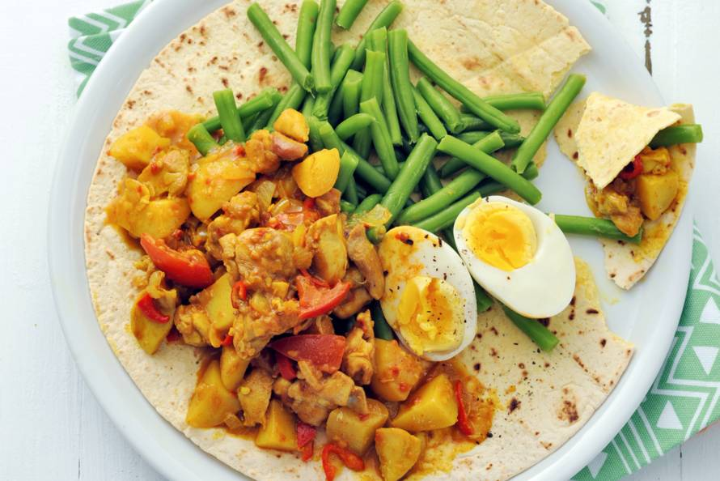

Hoe maak je roti?
Waar komt roti vandaan?
Roti is van oorsprong een Hindi woord en is de algemene benaming voor alle vormen van brood in grote delen van India, Pakistan, geheel Indonesië en geheel Maleisië. Meer specifiek worden hiermee alleen de ongerezen platte Indiase broden bedoeld zoals de Indiase naam, alu paratha en chapati.
Met de emigratie van Hindoestanen uit India naar Suriname is ook de roti meegekomen. De "pannenkoek" die in Suriname (en Nederland) roti heet, wordt in India ook wel chapati genoemd. Het is een soort ongezoete broodpannenkoek die verschillende toevoegingen kan hebben: in de Surinaamse variant veelal gemalen gele spliterwten (roti dalbharie) of aardappelen (roti alubharie) en met smaakmakers als komijn en chilipeper. Voor de bereiding worden balletjes deeg (eventueel met additionele ingrediënten) uitgerold tot dunne "pannenkoeken" die op een zogeheten rotiplaat worden gebakken. De Surinaamse roti wordt met een aantal bijgerechten geserveerd zoals kousenband, aardappelen, hardgekookte eieren, knoflook, ui en verschillende soorten vlees (kip, eend, schaap), welke bijgerechten meestal gekruid worden met masala, een mengsel van gemalen specerijen vergelijkbaar met curry. Roti wordt in Suriname niet met tomaat gegeten. Het is gebruikelijk de roti met de handen te eten. Je breekt een stukje van het rotivel af om met het stukje in de hand de roti mix te pakken en op te eten.

Voor de roti:
- 500gr zelfrijzend bakmeel
- 300ml water
- 150gr gele spliterwten
- 1 eetlepel gemalen komijnzaad
- 2 teentjes knoflook
Voor de roti mix:
- 350Ml water
- 2 teentjes knoflook
- 1 ui
- 1/2 rode peper
- 2 eetlepel olie
- 2 eetlepel kerrie (Nandan Massala
- 1 theelepel vetsin
- 2 bouillonblokjes
- 1 klein blikje tomatenpuree
- 6 aardappelen
- 2 kipfilet
- 3 eiren
- 250gr kousenband
Voorbereiding:
- Spoel de erwten af en doe ze in een pan met water. Kook de erwten ongeveer 20 minuten.
- laat ze uitlekken in een vergiet en maal ze fijn
- Doe de gepureerde erwten in een schaaltje en voeg komijn, knoflook(geperst), ui, peper en zout toe en meng het goed door elkaar
De roti:
- Doe het bakmeel met het water in een kom en kneed dit tot het niet meer aan je handenplakt. (voeg eventueel nog wat water/meel toe)
- maak van het deeg balltejes van zo'n 5cm groot
- bestuif je schone aanrecht met bloem en pak een balletje. Druk met je duim een kuiltje in het balletje en doe hier in een volle eetlepel van de erwtenpuree(afgekoeld).
- Vouw dan het balletje in een draaiende beweging dicht. Herhaal dit met de andere balletjes. Rol ze met de deegroller uit tot flinke maar niet al te dunne pannekoeken. Stapel ze op met wat bakpapier ertussen zodat ze niet aan mekaar plakken.
Voor de mix
- Snij de aardappelen kleiner; verdeel ze in zes stukjes per aardappel en kook ze bijna gaar, giet ze af.
- Kook de kousenband ongeveer 15 minuten en giet af.
- Kook de eieren hard en pel ze.
- Bak de kipstukjes lichtbruin maar nog net niet gaar.
Bereidingswijze van de roti
- Verhit een grote Koekenpan zonder olie.
- Leg de roti in de pan en kwast ondertussen de bovenkant in met olie. Draai de roti dan direct om en smeer de andere kant in.
- Bak de roti aan beide zijden goudgeel tot ze even bol gaat staan, net als een pannekoek. In totaal is de baktijd per roti ongeveer 5 minuten.
Bereidingswijze van de roti mix
- Snij of knip het pepertje fijn en was hierna goed je handen.
- Fruit ui, peper en knoflook (geperst) in 2 eetlepels olie.
- Voeg de tomatenpuree en het kerriepoeder toe, doe er de vetsin en het water bij, verkruimel de bouillonblokjes hierover.
- Laat dit even zachtjes koken en doe de aardappelen, kip- en groentenstukjes erbij.
- Warm tot slot de hele of halve eieren mee in de pan.
bron van de geschiedenis over roti